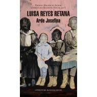

Adios a Dylan - Premio Mauricio Achar|Literatura Random House 2016
Autor: ALEJANDRO CARRILLO ROSAS
EDITORIAL: LITERATURA RANDOM HOUSE

Autor: ALEJANDRO CARRILLO ROSAS
EDITORIAL: LITERATURA RANDOM HOUSE
Novela ganadora del Premio Mauricio Achar. Porque crecer se trata de contestarnos una sola pregunta: How does it feel to be own your own, like a complete unknown, like a rolling stone?Premio Mauricio Achar 2016. Una novela iniciatica con influencia de la beat generation, un libro sobre los idolos, los papas y los ideales a los que nos colgamos para crecer. Me quede asi un buen rato, contemplando al nuevo personaje del espejo, pensando que esta version se parecia mas a mi mismo que ninguna otra, y que si Sara tambien veia a este personaje guapo y misterioso, esta iba a ser una buena historia. Sara, la chava de la que se enamora Omar, un obsesionado fan de Bob Dylan de 19. Sara, la Diosa Tragica que coincidentemente tiene el mismo nombre que la primer esposa de su idolo. Sara, el ideal de la pureza y la sordidez que lleva a Omar a un viaje a traves de la obsesion y la orfandad. Sara, la encarnacion de todas las historias que el protagonista quiere vivir para tener una vida de verdad, llena de mierda y alegria, virtud y dolor, amor y hambre; una vida afuera de su mente, lejos de su existencia clase mediera. ...para mi de su boca salen figuras de humo, poemas que puedo moldear segun me convenga, dice Omar en algun momento. Y ese transformar la realidad en ficcion lo lleva a enfrentarse a si mismo, lejos de la Ciudad de Mexico, en Nueva York. Lee esta novela oyendo la cancion de cada capitulo en www.adiosadylan.com
Los precios publicados en esta tienda están sujetos a cambios sin previo aviso y solo son aplicables para ventas en línea.
Algunos títulos están sujetos a disponibilidad.
Todos los Derechos Reservados